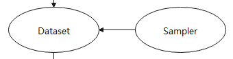
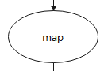

Dataset
Ascend GPU CPU Beginner
Translator: Wei_zz

Data is the foundation of deep learning, and high-quality data input will play a positive role in the entire deep neural network. In the network training and inference process, the original data is generally stored in a disk or a database, and it needs to be first read into the memory space through the data loading step, converted into the framework’s common tensor (Tensor) format, and then processed and enhanced by the data step, map it to a feature space that is easier to learn, while increasing the number of samples and generalization, and finally input to the network for calculation.
The overall process is shown in the figure below:
This chapter introduces some basic concepts involved in data loading, data processing, and enhancement operations in mindspore.dataset(hereinafter referred to as Dataset).
Dataset
A dataset is a collection of samples. A row of the dataset is a sample that contains one or more features, and may also contain a label. The dataset needs to meet certain specifications to facilitate the evaluation of the model’s effect.
Dataset supports multiple format data sets, including MindSpore self-developed data format MindRecord, commonly used public image data sets and text data sets, user-defined data sets, etc. For detailed data sets supported by Mindspore, please refer to: MindSpore Support Data Sets.
Dataset also supports the conversion of commonly used data sets and user-defined data sets to MindSpore data format (MindRecord). For details, please refer to: Converting Data Sets to MindRecord.
Dataset Loading

The dataset loading makes the model training continuously obtain data for training.
Dataset provides corresponding classes for a variety of commonly used data sets to load data sets. At the same time, for data files in different storage formats, Dataset also has corresponding classes for data loading. For loading of MindSpore dataset, please refer to: loading of MindSpore dataset.
Dataset provides a sampler for multiple purposes (Sampler), the sampler is responsible for generating the read index sequence, the Dataset is responsible for reading the corresponding data according to the index, and helping users to sample the dataset in different forms to meet training needs and solve problems such as the dataset is too large or the sample category distribution is uneven. Note that the sampler is responsible for filtering and reordering the samples, and will not perform the batch operation.
For the introduction of Mindspore data sampling, please refer to: MindSpore data sampling.
Data Processing
After the Dataset loads the data into the memory, the data is organized in the form of Tensor. At the same time, Tensor is also the basic data structure in data augmentation operations.
Shuffle Operation

Training is generally multiple epochs, and the shuffle operation disrupts the order of the data to ensure that the data order of each epoch is different during training to prevent training from overfitting.
Dataset provides multiple ways to implement global shuffle operations.
shuffleparameters of the dataset loading classimport numpy as np import mindspore.dataset as ds data = [1, 2, 3, 4] dataset = ds.NumpySlicesDataset(data=data, column_names=["column_1"], shuffle=True)
For details, please refer to: NumpySlicesDataset.
shuffle operator
import numpy as np import mindspore.dataset as ds data = [1, 2, 3, 4] dataset = ds.NumpySlicesDataset(data=data, column_names=["column_1"]) # buffer_size equal to the number of rows in the entire dataset will result in a global shuffle dataset = dataset.shuffle(4)
For details, please refer to: shuffle API.
Random sampling
import numpy as np import mindspore.dataset as ds data = [1, 2, 3, 4] sampler = ds.RandomSampler() dataset = ds.NumpySlicesDataset(data=data, column_names=["column_1"],sampler=sampler)
For details, please refer to: RandomSampler.
Map Operation

The Map operation performs data enhancement on all kinds of data, is responsible for starting and executing the data enhancement operators provided by the Dataset or user-defined, and mapping and transforming the data. Among them, data enhancement is a method of creating “new” data with different directions. One is to generate “more data” from limited data, and the other is to prevent overfitting.
Dataset’s c_transforms and py_transforms modules provide implementations of data enhancement operators based on C++ and Python respectively, and users can customize functions for data enhancement.
For image data enhancement operations, please refer to: image data enhancement.
For text data enhancement operations, please refer to: [text data enhancement.
For Map operation, please refer to: Map operation.
Batch Operation

Only one sample is used to train the model at a time, which has good randomness, but poor parallelization, resulting in low training efficiency. The introduction of mini-batch can better balance the training speed and training effect.
The Batch operation is responsible for “packing” multiple Tensors with the same shape together to achieve training in a mini-batch manner. The Batch operation also provides the drop_remainder parameter, which means that the last batch that does not have a batch_size is deleted, and it will be retained by default. If the dataset size is 17373, 8 cards are used for training and the Batch size is 16, each card is allocated 2172 samples. When drop_remainder is True, 135 mini-batch can be packed on each card.
Before the “packing” action, Batch supports Tensors with inconsistent shapes according to user requirements, or automatically fills the shapes of Tensors in the same way, and executes user-defined functions through Per_batch_map before “packing”.
padding operation
import numpy as np import mindspore.dataset as ds # col1d: [0],[1] # col2d: [[100],[200]], [[101],[201]] def gen_2cols(num): for i in range(num): yield (np.array([i]), np.array([[i + 100], [i + 200]])) dataset = ds.GeneratorDataset((lambda: gen_2cols(2)), ["col1d", "col2d"]) dataset = dataset.batch(batch_size=2, drop_remainder=False, pad_info={"col2d": ([2, 2], -2) , "col1d": ([2], -1)}) # col1d: [0, -1], [1, -1] # col2d: [[100, -2], [200, -2]], [[101, -2], [201, -2]]
per_batch_map operation
import numpy as np import mindspore.dataset as ds # first column: 0, 3, 6, 9 ... # second column:1, 4, 7, 10 ... # third column: 2, 5, 8, 11 ... def gen_3_cols(num): for i in range(num): yield (np.array([i * 3]), np.array([i * 3 + 1]), np.array([i * 3 + 2])) # first epoch batch_size per batch: 1, 2 ,3 ... # second epoch batch_size per batch: 2, 4, 6 ... # third epoch batch_size per batch: 3, 6 ,9 ... def batch_func(batchInfo): return (batchInfo.get_batch_num() + 1) * (batchInfo.get_epoch_num() + 1) # multiply first col by batch_num, multiply second col by -batch_num def map_func(col1, col2, batchInfo): return ([np.copy((1 + batchInfo.get_batch_num()) * arr) for arr in col1], [np.copy(-(1 + batchInfo.get_batch_num()) * arr) for arr in col2]) # col1: [[0]], [[ 6], [12]], [[27]] # col2: [[-1]],[[ -8], [-14]], [[-30]] # col3: [[2]], [[5], [8]], [[11]] dataset = ds.GeneratorDataset((lambda: gen_3_cols(4)), ["col1", "col2", "col3"]).batch (batch_size=batch_func, input_columns=["col1", "col2"], per_batch_map=map_func)
For Batch operation, please refer to: Batch operation.